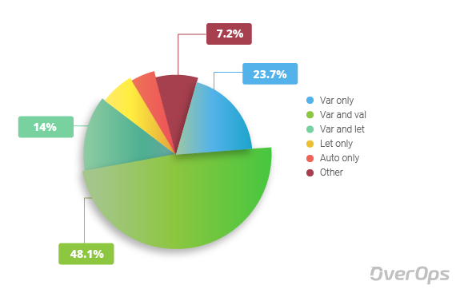

Java SE 10
Java SE 10
The java ecosystem just
(ish)
got released!
changes, features, whats new and...ze future üòé
Get jdk10 at Oracle (boo)
Slides available at github.com/vegaasen/presentations
(source on GitHub)
JEPs (JDK Enhancement Proposal) included
- JEP 286 Local Variable Type Inference
- Enable less strict type inference
- Only possible for local variables (+within iterable loops)
- JEP 322 Time-Based Release Versioning
- JEP 304 Garbage-Collector Interface
- JEP 307 Parallel Full GC for G1 ü§ì
- JEP 316 Heap Allocation on Alternative Memory Devices
- JEP 296 Consolidate the JDK Forest into a Single Repository
- JEP 319 Root Certificates
- JEP 317 Experimental Java-Based JIT Compiler
- JEP 312 Thread-Local Handshakes
- JEP 313 Remove the Native-Header Generation Tool
- next.java ☕️
JEP 322 Time-Based Release Versioning
Time-Based Release Versioning
Time-Based Release Versioning
— Java (@java) March 1, 2018
Six-month release model
The March 2018 release is #JDK10, the September 2018 release is #JDK11, and so forth. pic.twitter.com/wua7AV4nYX
- new releases every 6 th months
- uses
$FEATURE.$INTERIM.$UPDATE.$PATCHwhilst defining release
JEP 304/JEP 307 GC improvements
JEP 304 Garbage-Collector Interface
- Increase code isolation of different garbage collectors
- Introduces a clean interface for garbage collectors
- Advantages
- easier to exclude a GC from a JDK build
- easier to add a new GC without it affecting the code base
..although..this is primarily targeted GC developers..
JEP 307 Parallel Full GC for G1 ü§ì
- Introduced in Java 9 as default
- G1 designed to avoid FullGC (aka. stop-the-world)
- G1 not failsafe. Can go FullGC on memory reclaims not happening faster than the minor collections
- G1 was single-threaded (Mark-sweep-compact)
- "Parallel Full GC for G1" enables parllelability to perform collections quicker (possibly avoiding the above)
The aim of JEP 307 is to parallelize the full GC algorithm so that in the unlikely event of a G1 Full GC then the same number of threads can be used as in the concurrent collections.
JEP 316 Heap Allocation on Alternative Memory Devices (object heap only - not class/metaSpace[permGen]/thread) üëè
JEP 296 Consolidate the JDK Forest into a Single Repository üò¥
JEP 319 Root Certificates
i18n.t('openJDK finally an actual option for devs ü§©')
JEP 317 Experimental Java-Based JIT Compiler
- Was added in Java 9, but living "in the shadows"
-
Possible to enable now üéâ
not recommended for production ü§¶‚Äç
can lead to increased heap and startup times ü§¶‚Äç - Only supported on Linux/x64
java -XX:+UnlockExperimentalVMOptions -XX:+UseJVMCICompiler -jar myCoolJar.jarJEP 313 Remove the Native-Header Generation Tool
üò¥
javah - is now superseded by javac
JEP 312 Thread-Local Handshakes
Lays the groundwork for improved VM performance, by making it possible to execute a callback on application threads without performing a global VM safe-point (!!)
Means that a running JVM could stop individual threads and not just all of them
Improvements enabled
- Reducing the impact of acquiring a stack trace sample (e.g. for profiling and callback)
- Improving biased locking by only stopping individual threads for revoking biases
- Removing some memory barriers from the JVM
- Not used directly by us developers
Example
- Enables some threads to continue on a FullGC
- Better performance on stack trace sampling
java -XX:ThreadLocalHandshakes={false|true(def)} -jar myCoolJar.jarJEP 286 Local Variable Type Inference
-
Started in 2016
ppl went apeshit ü¶çüí© - Part of Oracle' process to simplify code-writing
- Reduces verbosity of the language
- Still keeps the type safety
- Not particular useful (reducing "redundancy")
-
Can not be used everywhere. I'm looking at you;
- Method parameters
- Constructor parameters
- Method return types
- Fields
- Catch formals (or any other kind of variable declaration)
-
..on the other hand, the following scopes are supported ✅;
- Local variables with initializer
- Indexes in the enhanced for-loop
- Locals declared in a traditional for-loop
alright alright, but how do I use it?!
There was a long discussion throughout the community regarding which syntactical sugar to use (i.e which identifier to use). The syntax and variations that were discussed included usage of the following options
var myCoolVariable = 100.0;
val myCoolVariable = 100.0;
let myCoolVariable = 100.0;
auto myCoolVariable = 100.0;
++var myCoolVariable = 100.0;varerr.. var you say?

Oracle decided upon using option #2, var, as the designated identifier
examples, examples, examples!!
Local variables
Map<String, List<String>> countryToCity = new HashMap<>();
for (Map.Entry<String, List<String>> citiesInCountry : countryToCity.entrySet()) {
List<String> cities = citiesInCountry.getValue();
// ...
}var countryToCity = new HashMap<String, List<City>>();
for (var citiesInCountry : countryToCity.entrySet()) {
var cities = citiesInCountry.getValue();
// ...
}Try-with-resources
Path path = Paths.get("src/web.log");
try (Stream<String> lines = Files.lines(path)){
long warningCount
= lines
.filter(line -> line.contains("WARNING"))
.count();
System.out.println("Found " + warningCount + " warnings in the
log file");
} catch (IOException e) {
e.printStackTrace();
}var path = Paths.get("src/web.log");
try (var lines = Files.lines(path)){
var warningCount
= lines
.filter(line -> line.contains("WARNING"))
.count();
System.out.println("Found " + warningCount + " warnings in the
log file");
} catch (IOException e) {
e.printStackTrace();
}Doesn't work
var ints = {0, 1, 2};
// --v
var addSpace = a -> a + " ";
// --v
var compareString = String::compareTo
// --v
var id = 123
id = "456"
// --v
private var getFoo() {
return "foo";
}
// --v
var kolli = new ArrayList<Kolli>();
kolli = new LinkedList<>(); // does not infer to List<Kolli>
Takeaways
I think it can be easy to over-use this everywhere - but, in my own eyes that could hurt your code and readability a bit. If used extensively, it is prone to complications. For some cases, like the following;
Map<String, List<String>> countryToCity = new HashMap<>();TrackingParcelCargoWithParcels<AnonymousCustomer, SimpleOrder<Book>> parcels = createTrackingParcelCargoWithParcels(customer, order);..it kinda makes sense to use the new form of variable defining
The compiler..
Oh, almost forgot. The compiler itself translates your code to the good'ol fashinable Java code as we know it. So, you may be as fancy as you like, but the compiler does not care and issues full fledge non-var mode ü§ì
Conclusion
- Some nice (mostly under ze hood) features
- New release-schedule!
- Platform taken a complete 180° with Java SE 9/10+
- Performance seems to be in focus (ü§ë)
- Removal of many existing packages and old not used features
- Exciting to follow the community. Will it keep up with the release schedule?
Whats next?!
Java SE 11 is due in 81 days (ish) ! Inclusion proposals:
- JEP-309 Dynamic Class-File Constants
- JEP-318 Epsilon: A No-Op Garbage Collector passive GC, bounded alloc, low latency overhead - expense of mem-üë£ and mem-throughput
- JEP-320 Remove the Java EE and CORBA Modules üëãüëãüëãüëã
java.xml.ws, java.xml.ws.annotation, jdk.xml.ws, java.xml.bind, jdk.xml.bind - JEP-321 HTTP Client was already in jdk9/10 too, but as incubator. totally rewritten for jdk11 (nb/io)
- JEP-323 Local-Variable Syntax for Lambda Parameters (uniformity? ü§®)
questions, questions, questions
This was a quick introduction to the highlights of Java SE 10. Read more at Oracle to get more details, if needed.
oh..and don't forget all the goodies we got with Java SE 9 as well! :-) Any questions? :-)Complete source available on @github